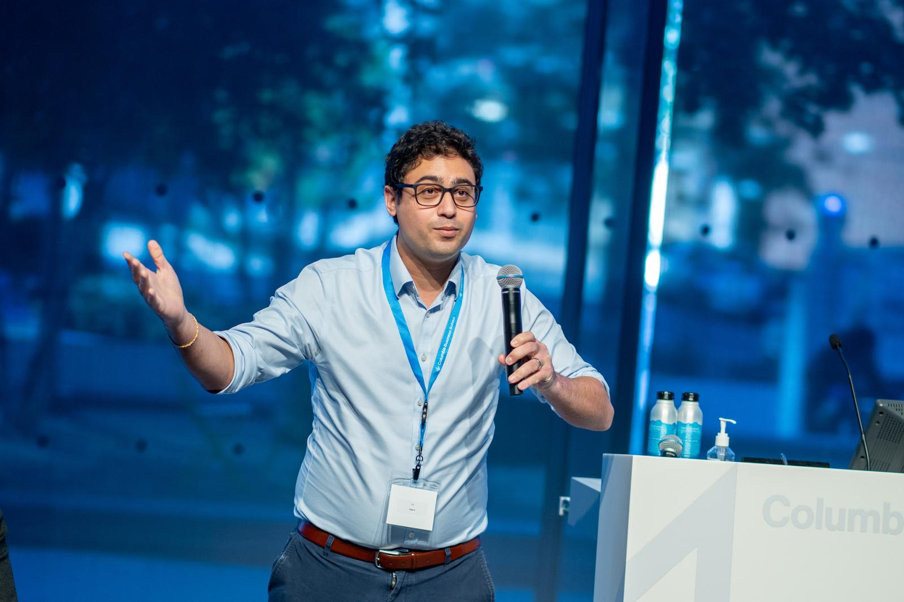

Malek Ben Sliman
Lecturer in Discipline · Marketing · Columbia Business School
I work on how organizations can use AI to learn from unconventional data, from paintings and auction records to factory sensors and text. I am now a Lecturer in Discipline in the Marketing division at Columbia Business School, where I teach MBA and EMBA courses on generative AI, marketing, and analytics, and run workshops on AI topics. Prior to joining the faculty full-time, I was a data scientist at Sotheby's, pricing artworks, and at Oden Technologies, improving factory production lines. I like building the tools I teach with, and I advise organizations that want to put data and AI to use. I'm an engineer by training, with an M.S. in Engineering from École Centrale Paris and an M.S. in Operations Research from Columbia, and I hold a Ph.D. in Quantitative Marketing from Columbia Business School.
Selected projects
- AI tool The A(I) List A community-curated directory of AI tools, ranked by peer votes live
- AI tool GEO Brand Tracker How LLMs recommend and describe a brand live
- Teaching MBA Copilot A RAG assistant for course materials that students deploy themselves code
- Teaching CBS Concept Lab Interactive statistics and marketing tools for CBS courses live
- Experiment Copa Machina Frontier LLMs make pre-registered 2026 World Cup predictions live